第四门课 卷积神经网络（Convolutional Neural Networks）
第一周 卷积神经网络（Foundations of Convolutional Neural Networks）
第四门课 卷积神经网络（Convolutional Neural Networks）第一周 卷积神经网络（Foundations of Convolutional Neural Networks）1.1 计算机视觉（Computer vision）1.2 边缘检测示例（Edge detection example）1.3 更多边缘检测内容（More edge detection）1.4 Padding1.5 卷积步长（Strided convolutions）1.6 三维卷积（Convolutions over volumes）1.7 单层卷积网络（One layer of a convolutional network）1.8 简单卷积网络示例（A simple convolution network example）1.9 池化层（Pooling layers）1.10 卷积神经网络示例（Convolutional neural network example）1.11 为什么使用卷积？（Why convolutions?）
1.1 计算机视觉（Computer vision）
欢迎参加这次的卷积神经网络课程，计算机视觉是一个飞速发展的一个领域，这多亏了深度学习。深度学习与计算机视觉可以帮助汽车，查明周围的行人和汽车，并帮助汽车避开它们。还使得人脸识别技术变得更加效率和精准，你们即将能够体验到或早已体验过仅仅通过刷脸就能解锁手机或者门锁。当你解锁了手机，我猜手机上一定有很多分享图片的应用。在上面，你能看到美食，酒店或美丽风景的图片。有些公司在这些应用上使用了深度学习技术来向你展示最为生动美丽以及与你最为相关的图片。机器学习甚至还催生了新的艺术类型。深度学习之所以让我兴奋有下面两个原因，我想你们也是这么想的。
第一，计算机视觉的高速发展标志着新型应用产生的可能，这是几年前，人们所不敢想象的。通过学习使用这些工具，你也许能够创造出新的产品和应用。
其次，即使到头来你未能在计算机视觉上有所建树，但我发现，人们对于计算机视觉的研究是如此富有想象力和创造力，由此衍生出新的神经网络结构与算法，这实际上启发人们去创造出计算机视觉与其他领域的交叉成果。举个例子，之前我在做语音识别的时候，我经常从计算机视觉领域中寻找灵感， 并将其应用于我的文献当中。所以即使你在计算机视觉方面没有做出成果，我也希望你也可以将所学的知识应用到其他算法和结构。就介绍到这儿，让我们开始学习吧。
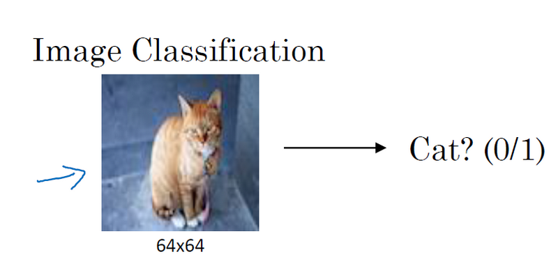
这是我们本节课将要学习的一些问题，你应该早就听说过图片分类，或者说图片识别。比如给出这张64×64的图片，让计算机去分辨出这是一只猫。
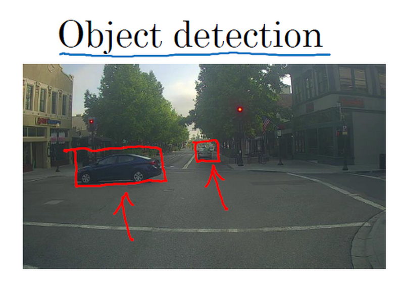
还有一个例子，在计算机视觉中有个问题叫做目标检测，比如在一个无人驾驶项目中，你不一定非得识别出图片中的物体是车辆，但你需要计算出其他车辆的位置，以确保自己能够避开它们。所以在目标检测项目中，首先需要计算出图中有哪些物体，比如汽车，还有图片中的其他东西，再将它们模拟成一个个盒子，或用一些其他的技术识别出它们在图片中的位置。注意在这个例子中，在一张图片中同时有多个车辆，每辆车相对与你来说都有一个确切的距离。
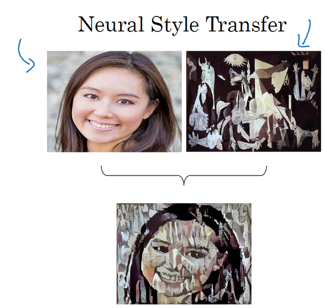
还有一个更有趣的例子，就是神经网络实现的图片风格迁移，比如说你有一张图片，但你想将这张图片转换为另外一种风格。所以图片风格迁移，就是你有一张满意的图片和一张风格图片，实际上右边这幅画是毕加索的画作，而你可以利用神经网络将它们融合到一起，描绘出一张新的图片。它的整体轮廓来自于左边，却是右边的风格，最后生成下面这张图片。这种神奇的算法创造出了新的艺术风格，所以在这门课程中，你也能通过学习做到这样的事情。
但在应用计算机视觉时要面临一个挑战，就是数据的输入可能会非常大。举个例子，在过去的课程中，你们一般操作的都是64×64的小图片，实际上，它的数据量是64×64×3，因为每张图片都有3个颜色通道。如果计算一下的话，可得知数据量为12288，所以我们的特征向量维度为12288。这其实还好，因为64×64真的是很小的一张图片。
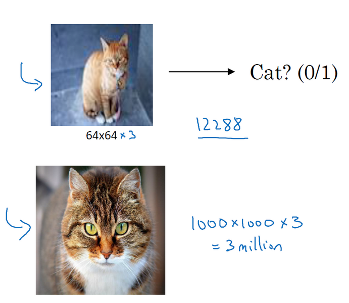
如果你要操作更大的图片，比如一张1000×1000的图片，它足有1兆那么大，但是特征向量的维度达到了1000×1000×3，因为有3个RGB通道，所以数字将会是300万。如果你在尺寸很小的屏幕上观察，可能察觉不出上面的图片只有64×64那么大，而下面一张是1000×1000的大图。
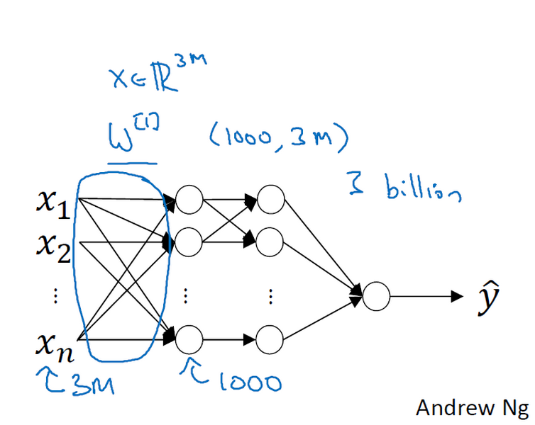
如果你要输入300万的数据量，这就意味着，特征向量的维度高达300万。所以在第一隐藏层中，你也许会有1000个隐藏单元，而所有的权值组成了矩阵 。如果你使用了标准的全连接网络，就像我们在第一门和第二门的课程里说的，这个矩阵的大小将会是1000×300万。因为现在的维度为，通常用来表示300万。这意味着矩阵会有30亿个参数，这是个非常巨大的数字。在参数如此大量的情况下，难以获得足够的数据来防止神经网络发生过拟合和竞争需求，要处理包含30亿参数的神经网络，巨大的内存需求让人不太能接受。
但对于计算机视觉应用来说，你肯定不想它只处理小图片，你希望它同时也要能处理大图。为此，你需要进行卷积计算，它是卷积神经网络中非常重要的一块。下节课中，我会为你介绍如何进行这种运算，我将用边缘检测的例子来向你说明卷积的含义。
1.2 边缘检测示例（Edge detection example）
卷积运算是卷积神经网络最基本的组成部分，使用边缘检测作为入门样例。在这个视频中，你会看到卷积是如何进行运算的。
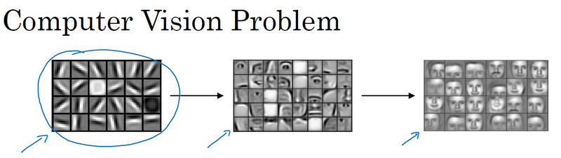
在之前的视频中，我说过神经网络的前几层是如何检测边缘的，然后，后面的层有可能检测到物体的部分区域，更靠后的一些层可能检测到完整的物体，这个例子中就是人脸。在这个视频中，你会看到如何在一张图片中进行边缘检测。
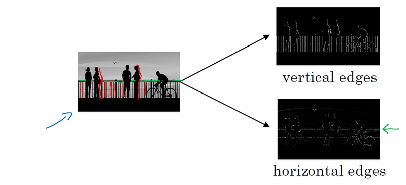
让我们举个例子，给了这样一张图片，让电脑去搞清楚这张照片里有什么物体，你可能做的第一件事是检测图片中的垂直边缘。比如说，在这张图片中的栏杆就对应垂直线，与此同时，这些行人的轮廓线某种程度上也是垂线，这些线是垂直边缘检测器的输出。同样，你可能也想检测水平边缘，比如说这些栏杆就是很明显的水平线，它们也能被检测到，结果在这。所以如何在图像中检测这些边缘？
看一个例子，这是一个6×6的灰度图像。因为是灰度图像，所以它是6×6×1的矩阵，而不是6×6×3的，因为没有RGB三通道。为了检测图像中的垂直边缘，你可以构造一个3×3矩阵。在共用习惯中，在卷积神经网络的术语中，它被称为过滤器。我要构造一个3×3的过滤器，像这样。在论文它有时候会被称为核，而不是过滤器，但在这个视频中，我将使用过滤器这个术语。对这个6×6的图像进行卷积运算，卷积运算用“”来表示，用3×3的过滤器对其进行卷积。
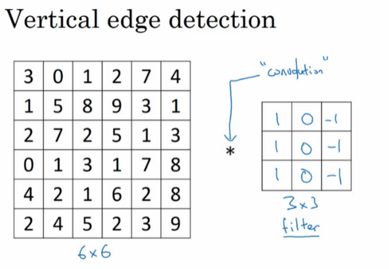
关于符号表示，有一些问题，在数学中“”就是卷积的标准标志，但是在Python中，这个标识常常被用来表示乘法或者元素乘法。所以这个“”有多层含义，它是一个重载符号，在这个视频中，当“”表示卷积的时候我会特别说明。
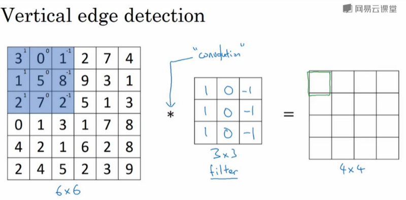
这个卷积运算的输出将会是一个4×4的矩阵，你可以将它看成一个4×4的图像。下面来说明是如何计算得到这个4×4矩阵的。为了计算第一个元素，在4×4左上角的那个元素，使用3×3的过滤器，将其覆盖在输入图像，如下图所示。然后进行元素乘法（element-wise products）运算，所以，然后将该矩阵每个元素相加得到最左上角的元素，即。
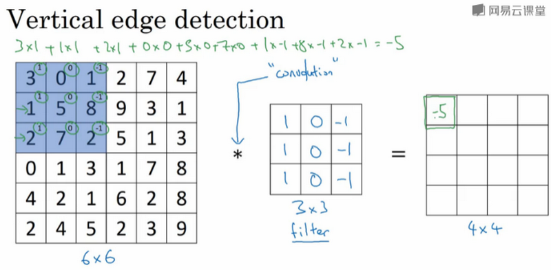
把这9个数加起来得到-5，当然，你可以把这9个数按任何顺序相加，我只是先写了第一列，然后第二列，第三列。
接下来，为了弄明白第二个元素是什么，你要把蓝色的方块，向右移动一步，像这样，把这些绿色的标记去掉：
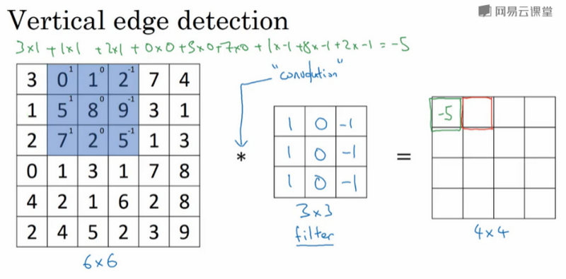
继续做同样的元素乘法，然后加起来，所以是 。
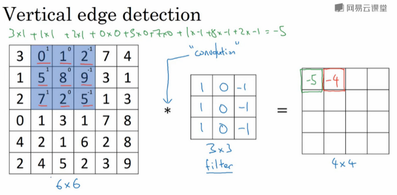
接下来也是一样，继续右移一步，把9个数的点积加起来得到0。
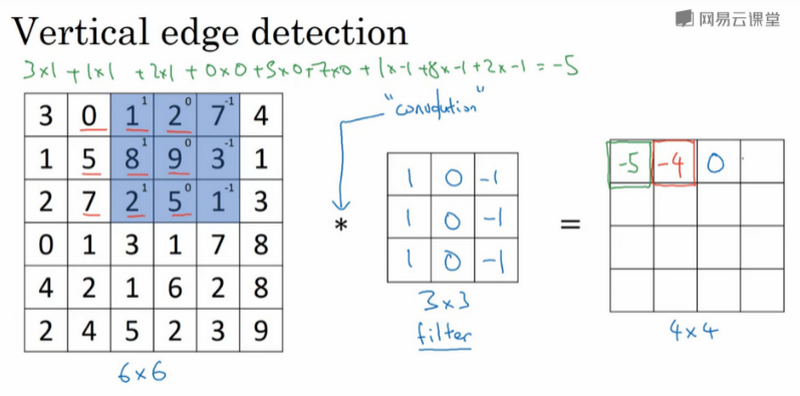
继续移得到8，验证一下：。
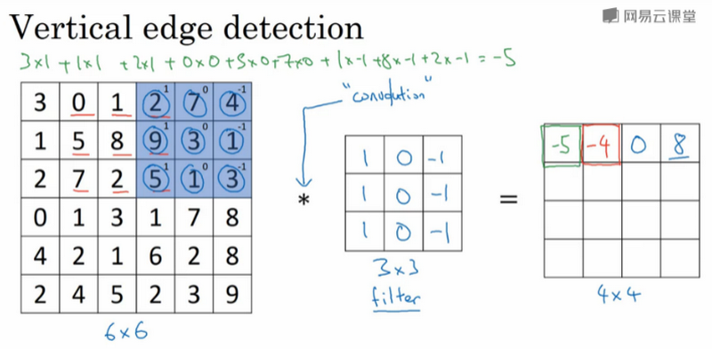
接下来为了得到下一行的元素，现在把蓝色块下移，现在蓝色块在这个位置：
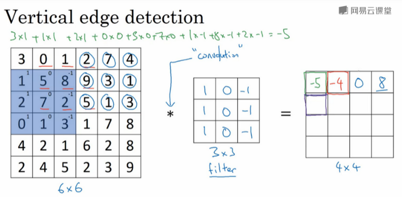
重复进行元素乘法，然后加起来。通过这样做得到-10。再将其右移得到-2，接着是2，3。以此类推，这样计算完矩阵中的其他元素。
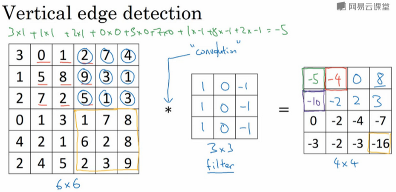
为了说得更清楚一点，这个-16是通过底部右下角的3×3区域得到的。
因此6×6矩阵和3×3矩阵进行卷积运算得到4×4矩阵。这些图片和过滤器是不同维度的矩阵，但左边矩阵容易被理解为一张图片，中间的这个被理解为过滤器，右边的图片我们可以理解为另一张图片。这个就是垂直边缘检测器，下一页中你就会明白。
在往下讲之前，多说一句，如果你要使用编程语言实现这个运算，不同的编程语言有不同的函数，而不是用“”来表示卷积。所以在编程练习中，你会使用一个叫conv_forward的函数。如果在tensorflow下，这个函数叫tf.conv2d。在其他深度学习框架中，在后面的课程中，你将会看到Keras这个框架，在这个框架下用Conv2D实现卷积运算。所有的编程框架都有一些函数来实现卷积运算。
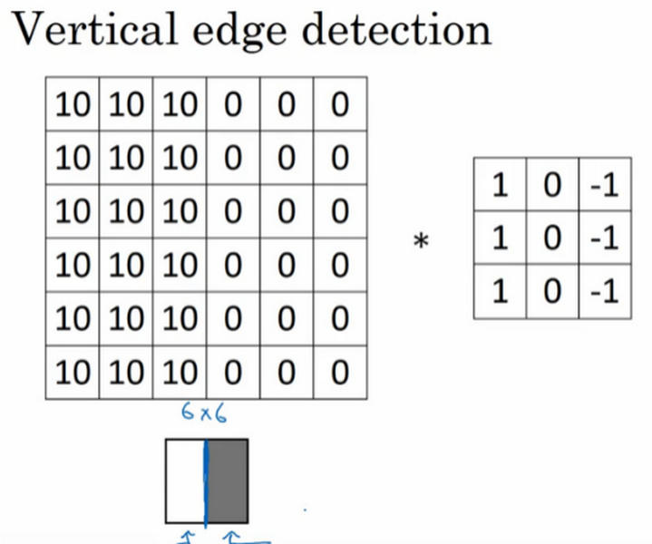
为什么这个可以做垂直边缘检测呢？让我们来看另外一个例子。为了讲清楚，我会用一个简单的例子。这是一个简单的6×6图像，左边的一半是10，右边一般是0。如果你把它当成一个图片，左边那部分看起来是白色的，像素值10是比较亮的像素值，右边像素值比较暗，我使用灰色来表示0，尽管它也可以被画成黑的。图片里，有一个特别明显的垂直边缘在图像中间，这条垂直线是从黑到白的过渡线，或者从白色到深色。
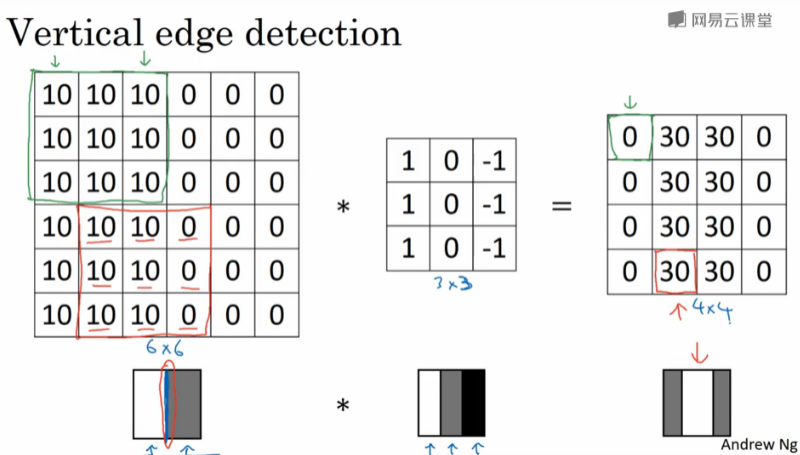
所以，当你用一个3×3过滤器进行卷积运算的时候，这个3×3的过滤器可视化为下面这个样子，在左边有明亮的像素，然后有一个过渡，0在中间，然后右边是深色的。卷积运算后，你得到的是右边的矩阵。如果你愿意，可以通过数学运算去验证。举例来说，最左上角的元素0，就是由这个3×3块（绿色方框标记）经过元素乘积运算再求和得到的，
。相反这个30是由这个（红色方框标记）得到的，
。
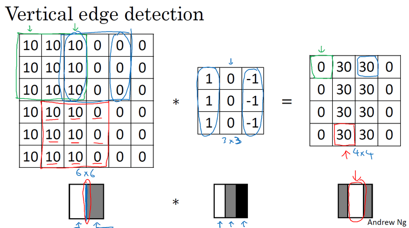
如果把最右边的矩阵当成图像，它是这个样子。在中间有段亮一点的区域，对应检查到这个6×6图像中间的垂直边缘。这里的维数似乎有点不正确，检测到的边缘太粗了。因为在这个例子中，图片太小了。如果你用一个1000×1000的图像，而不是6×6的图片，你会发现其会很好地检测出图像中的垂直边缘。在这个例子中，在输出图像中间的亮处，表示在图像中间有一个特别明显的垂直边缘。从垂直边缘检测中可以得到的启发是，因为我们使用3×3的矩阵（过滤器），所以垂直边缘是一个3×3的区域，左边是明亮的像素，中间的并不需要考虑，右边是深色像素。在这个6×6图像的中间部分，明亮的像素在左边，深色的像素在右边，就被视为一个垂直边缘，卷积运算提供了一个方便的方法来发现图像中的垂直边缘。
所以你已经了解卷积是怎么工作的，在下一个视频中，你将会看到如何使用卷积运算作为卷积神经网络的基本模块的。
1.3 更多边缘检测内容（More edge detection）
你已经见识到用卷积运算实现垂直边缘检测，在本视频中，你将学习如何区分正边和负边，这实际就是由亮到暗与由暗到亮的区别，也就是边缘的过渡。你还能了解到其他类型的边缘检测以及如何去实现这些算法，而不要总想着去自己编写一个边缘检测程序，让我们开始吧。
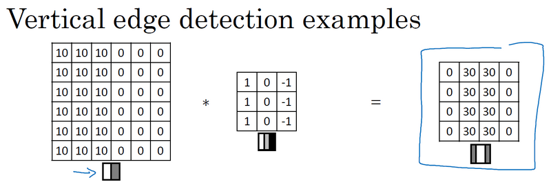
还是上一个视频中的例子，这张6×6的图片，左边较亮，而右边较暗，将它与垂直边缘检测滤波器进行卷积，检测结果就显示在了右边这幅图的中间部分。
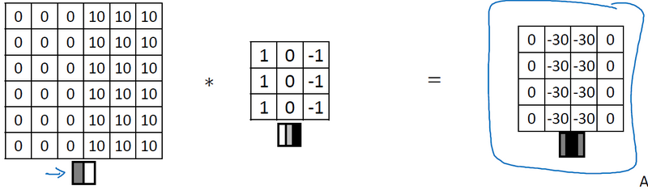
现在这幅图有什么变化呢？它的颜色被翻转了，变成了左边比较暗，而右边比较亮。现在亮度为10的点跑到了右边，为0的点则跑到了左边。如果你用它与相同的过滤器进行卷积，最后得到的图中间会是-30，而不是30。如果你将矩阵转换为图片，就会是该矩阵下面图片的样子。现在中间的过渡部分被翻转了，之前的30翻转成了-30，表明是由暗向亮过渡，而不是由亮向暗过渡。
如果你不在乎这两者的区别，你可以取出矩阵的绝对值。但这个特定的过滤器确实可以为我们区分这两种明暗变化的区别。
再来看看更多的边缘检测的例子，我们已经见过这个3×3的过滤器，它可以检测出垂直的边缘。所以，看到右边这个过滤器，我想你应该猜出来了，它能让你检测出水平的边缘。提醒一下，一个垂直边缘过滤器是一个3×3的区域，它的左边相对较亮，而右边相对较暗。相似的，右边这个水平边缘过滤器也是一个3×3的区域，它的上边相对较亮，而下方相对较暗。
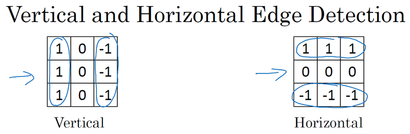
这里还有个更复杂的例子，左上方和右下方都是亮度为10的点。如果你将它绘成图片，右上角是比较暗的地方，这边都是亮度为0的点，我把这些比较暗的区域都加上阴影。而左上方和右下方都会相对较亮。如果你用这幅图与水平边缘过滤器卷积，就会得到右边这个矩阵。
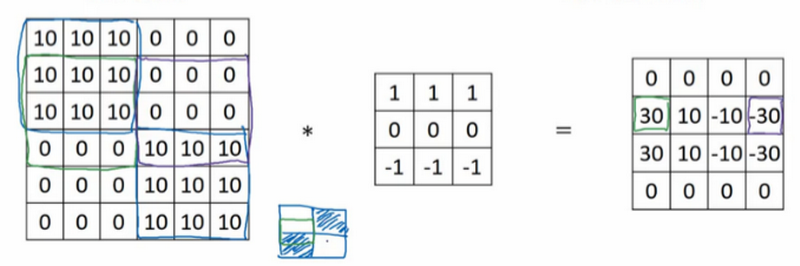
再举个例子，这里的30（右边矩阵中绿色方框标记元素）代表了左边这块3×3的区域（左边矩阵绿色方框标记部分），这块区域确实是上边比较亮，而下边比较暗的，所以它在这里发现了一条正边缘。而这里的-30（右边矩阵中紫色方框标记元素）又代表了左边另一块区域（左边矩阵紫色方框标记部分），这块区域确实是底部比较亮，而上边则比较暗，所以在这里它是一条负边。
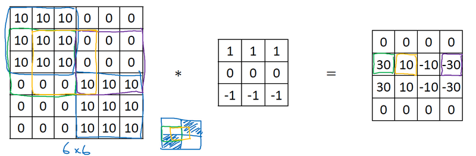
再次强调，我们现在所使用的都是相对很小的图片，仅有6×6。但这些中间的数值，比如说这个10（右边矩阵中黄色方框标记元素）代表的是左边这块区域（左边6×6矩阵中黄色方框标记的部分）。这块区域左边两列是正边，右边一列是负边，正边和负边的值加在一起得到了一个中间值。但假如这个一个非常大的1000×1000的类似这样棋盘风格的大图，就不会出现这些亮度为10的过渡带了，因为图片尺寸很大，这些中间值就会变得非常小。
总而言之，通过使用不同的过滤器，你可以找出垂直的或是水平的边缘。但事实上，对于这个3×3的过滤器来说，我们使用了其中的一种数字组合。
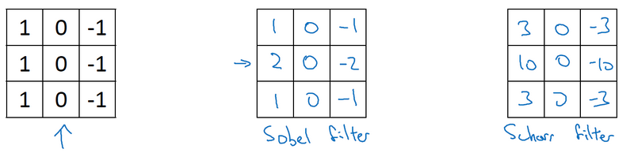
但在历史上，在计算机视觉的文献中，曾公平地争论过怎样的数字组合才是最好的，所以你还可以使用这种：，叫做Sobel的过滤器，它的优点在于增加了中间一行元素的权重，这使得结果的鲁棒性会更高一些。
但计算机视觉的研究者们也会经常使用其他的数字组合，比如这种：，这叫做Scharr过滤器，它有着和之前完全不同的特性，实际上也是一种垂直边缘检测，如果你将其翻转90度，你就能得到对应水平边缘检测。
随着深度学习的发展，我们学习的其中一件事就是当你真正想去检测出复杂图像的边缘，你不一定要去使用那些研究者们所选择的这九个数字，但你可以从中获益匪浅。把这矩阵中的9个数字当成9个参数，并且在之后你可以学习使用反向传播算法，其目标就是去理解这9个参数。
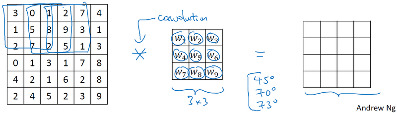
当你得到左边这个6×6的图片，将其与这个3×3的过滤器进行卷积，将会得到一个出色的边缘检测。这就是你在下节视频中将会看到的，把这9个数字当成参数的过滤器，通过反向传播，你可以学习这种的过滤器，或者Sobel过滤器和Scharr过滤器。还有另一种过滤器，这种过滤器对于数据的捕捉能力甚至可以胜过任何之前这些手写的过滤器。相比这种单纯的垂直边缘和水平边缘，它可以检测出45°或70°或73°，甚至是任何角度的边缘。所以将矩阵的所有数字都设置为参数，通过数据反馈，让神经网络自动去学习它们，我们会发现神经网络可以学习一些低级的特征，例如这些边缘的特征。尽管比起那些研究者们，我们要更费劲一些，但确实可以动手写出这些东西。不过构成这些计算的基础依然是卷积运算，使得反向传播算法能够让神经网络学习任何它所需要的3×3的过滤器，并在整幅图片上去应用它。这里，这里，还有这里（左边矩阵蓝色方框标记部分），去输出这些，任何它所检测到的特征，不管是垂直的边缘，水平的边缘，还有其他奇怪角度的边缘，甚至是其它的连名字都没有的过滤器。
所以这种将这9个数字当成参数的思想，已经成为计算机视觉中最为有效的思想之一。在接下来的课程中，也就是下个星期，我们将详细去探讨如何使用反向传播去让神经网络学习这9个数字。但在此之前，我们需要先讨论一些其它细节，比如一些基础的卷积运算的变量。在下面两节视频中，我将与你们讨论如何去使用padding，以及卷积各种不同的发展，这两节内容将会是卷积神经网络中卷积模块的重要组成部分，所以我们下节视频再见。
1.4 Padding
为了构建深度神经网络，你需要学会使用的一个基本的卷积操作就是padding，让我们来看看它是如何工作的。
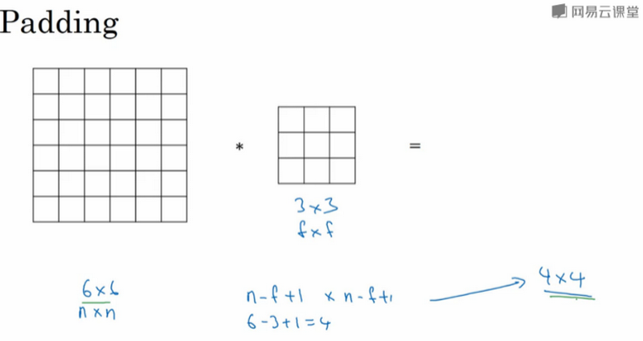
我们在之前视频中看到，如果你用一个3×3的过滤器卷积一个6×6的图像，你最后会得到一个4×4的输出，也就是一个4×4矩阵。那是因为你的3×3过滤器在6×6矩阵中，只可能有4×4种可能的位置。这背后的数学解释是，如果我们有一个的图像，用的过滤器做卷积，那么输出的维度就是。在这个例子里是，因此得到了一个4×4的输出。
这样的话会有两个缺点，第一个缺点是每次做卷积操作，你的图像就会缩小，从6×6缩小到4×4，你可能做了几次之后，你的图像就会变得很小了，可能会缩小到只有1×1的大小。你可不想让你的图像在每次识别边缘或其他特征时都缩小，这就是第一个缺点。
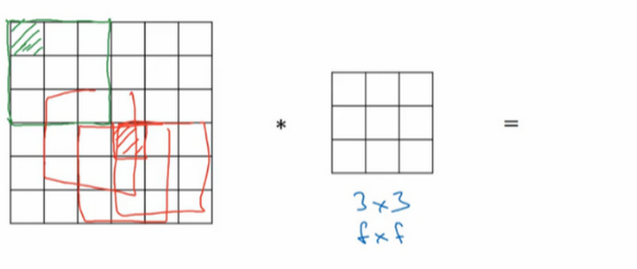
第二个缺点时，如果你注意角落边缘的像素，这个像素点（绿色阴影标记）只被一个输出所触碰或者使用，因为它位于这个3×3的区域的一角。但如果是在中间的像素点，比如这个（红色方框标记），就会有许多3×3的区域与之重叠。所以那些在角落或者边缘区域的像素点在输出中采用较少，意味着你丢掉了图像边缘位置的许多信息。

为了解决这两个问题，一是输出缩小。当我们建立深度神经网络时，你就会知道你为什么不希望每进行一步操作图像都会缩小。比如当你有100层深层的网络，如果图像每经过一层都缩小的话，经过100层网络后，你就会得到一个很小的图像，所以这是个问题。另一个问题是图像边缘的大部分信息都丢失了。
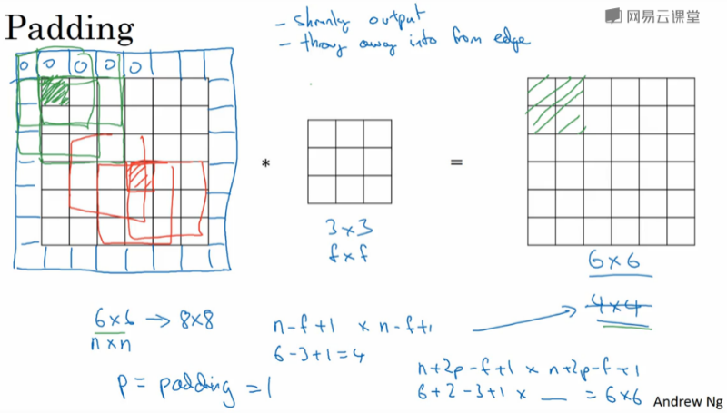
为了解决这些问题，你可以在卷积操作之前填充这幅图像。在这个案例中，你可以沿着图像边缘再填充一层像素。如果你这样操作了，那么6×6的图像就被你填充成了一个8×8的图像。如果你用3×3的图像对这个8×8的图像卷积，你得到的输出就不是4×4的，而是6×6的图像，你就得到了一个尺寸和原始图像6×6的图像。习惯上，你可以用0去填充，如果是填充的数量，在这个案例中，，因为我们在周围都填充了一个像素点，输出也就变成了，所以就变成了，和输入的图像一样大。这个涂绿的像素点（左边矩阵）影响了输出中的这些格子（右边矩阵）。这样一来，丢失信息或者更准确来说角落或图像边缘的信息发挥的作用较小的这一缺点就被削弱了。
刚才我已经展示过用一个像素点来填充边缘，如果你想的话，也可以填充两个像素点，也就是说在这里填充一层。实际上你还可以填充更多像素。我这里画的这种情况，填充后。
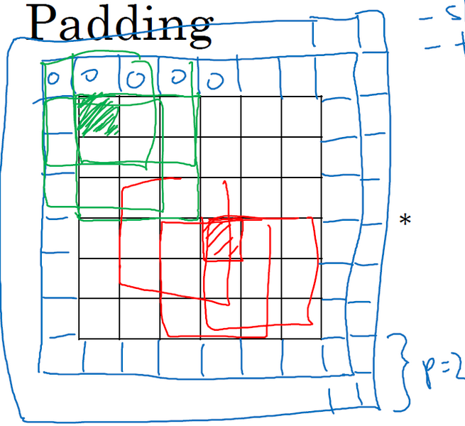
至于选择填充多少像素，通常有两个选择，分别叫做Valid卷积和Same卷积。
Valid卷积意味着不填充，这样的话，如果你有一个的图像，用一个的过滤器卷积，它将会给你一个维的输出。这类似于我们在前面的视频中展示的例子，有一个6×6的图像，通过一个3×3的过滤器，得到一个4×4的输出。
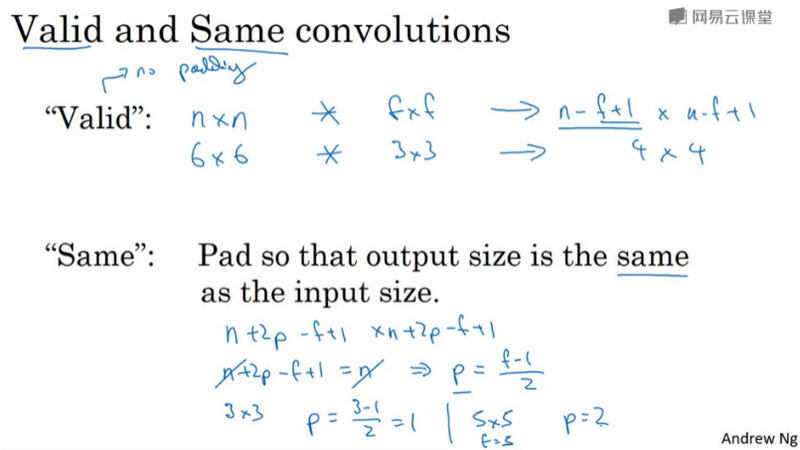
另一个经常被用到的填充方法叫做Same卷积，那意味你填充后，你的输出大小和输入大小是一样的。根据这个公式，当你填充个像素点，就变成了，最后公式变为。因此如果你有一个的图像，用个像素填充边缘，输出的大小就是这样的。如果你想让的话，使得输出和输入大小相等，如果你用这个等式求解，那么。所以当是一个奇数的时候，只要选择相应的填充尺寸，你就能确保得到和输入相同尺寸的输出。这也是为什么前面的例子，当过滤器是3×3时，和上一张幻灯片的例子一样，使得输出尺寸等于输入尺寸，所需要的填充是(3-1)/2，也就是1个像素。另一个例子，当你的过滤器是5×5，如果，然后代入那个式子，你就会发现需要2层填充使得输出和输入一样大，这是过滤器5×5的情况。
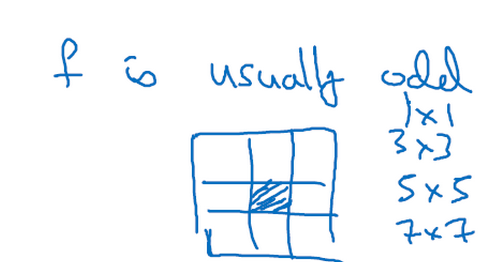
习惯上，计算机视觉中，通常是奇数，甚至可能都是这样。你很少看到一个偶数的过滤器在计算机视觉里使用，我认为有两个原因。
其中一个可能是，如果是一个偶数，那么你只能使用一些不对称填充。只有是奇数的情况下，Same卷积才会有自然的填充，我们可以以同样的数量填充四周，而不是左边填充多一点，右边填充少一点，这样不对称的填充。
第二个原因是当你有一个奇数维过滤器，比如3×3或者5×5的，它就有一个中心点。有时在计算机视觉里，如果有一个中心像素点会更方便，便于指出过滤器的位置。
也许这些都不是为什么通常是奇数的充分原因，但如果你看了卷积的文献，你经常会看到3×3的过滤器，你也可能会看到一些5×5，7×7的过滤器。后面我们也会谈到1×1的过滤器，以及什么时候它是有意义的。但是习惯上，我推荐你只使用奇数的过滤器。我想如果你使用偶数f也可能会得到不错的表现，如果遵循计算机视觉的惯例，我通常使用奇数值的。
你已经看到如何使用padding卷积，为了指定卷积操作中的padding，你可以指定的值。也可以使用Valid卷积，也就是。也可使用Same卷积填充像素，使你的输出和输入大小相同。以上就是padding，在接下来的视频中我们讨论如何在卷积中设置步长。
1.5 卷积步长（Strided convolutions）
卷积中的步幅是另一个构建卷积神经网络的基本操作，让我向你展示一个例子。
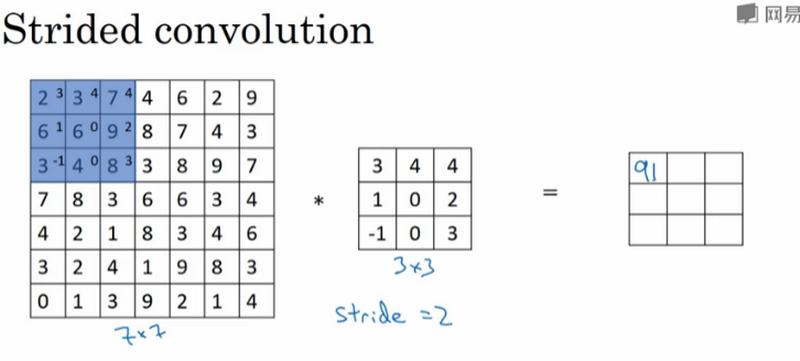
如果你想用3×3的过滤器卷积这个7×7的图像，和之前不同的是，我们把步幅设置成了2。你还和之前一样取左上方的3×3区域的元素的乘积，再加起来，最后结果为91。
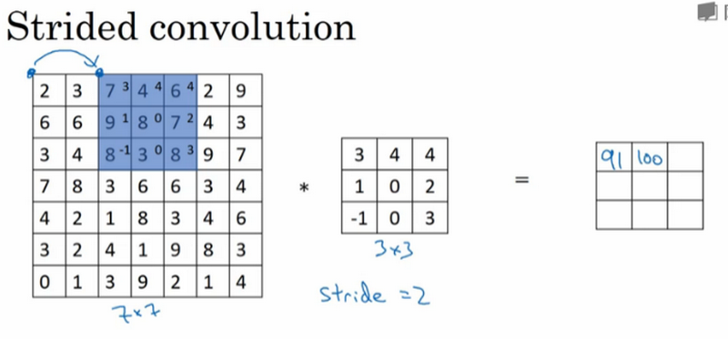
只是之前我们移动蓝框的步长是1，现在移动的步长是2，我们让过滤器跳过2个步长，注意一下左上角，这个点移动到其后两格的点，跳过了一个位置。然后你还是将每个元素相乘并求和，你将会得到的结果是100。
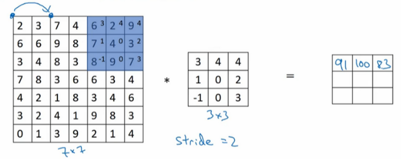
现在我们继续，将蓝色框移动两个步长，你将会得到83的结果。当你移动到下一行的时候，你也是使用步长2而不是步长1，所以我们将蓝色框移动到这里：
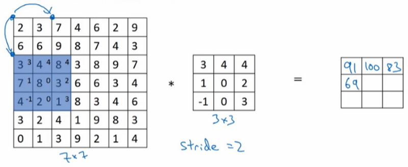
注意到我们跳过了一个位置，得到69的结果，现在你继续移动两个步长，会得到91，127，最后一行分别是44，72，74。
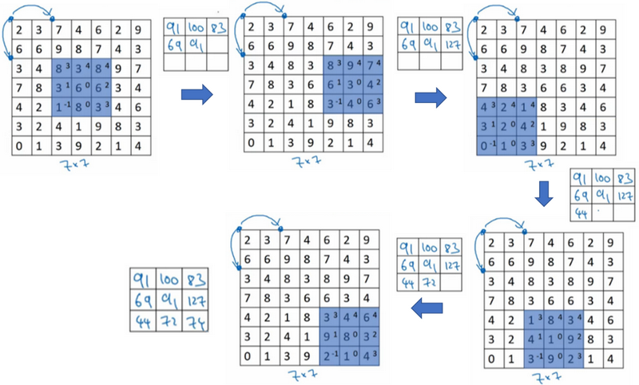
所以在这个例子中，我们用3×3的矩阵卷积一个7×7的矩阵，得到一个3×3的输出。输入和输出的维度是由下面的公式决定的。如果你用一个的过滤器卷积一个的图像，你的padding为，步幅为，在这个例子中，你会得到一个输出，因为现在你不是一次移动一个步子，而是一次移动个步子，输出于是变为
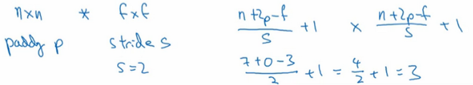
在我们的这个例子里，，，，，，即3×3的输出。
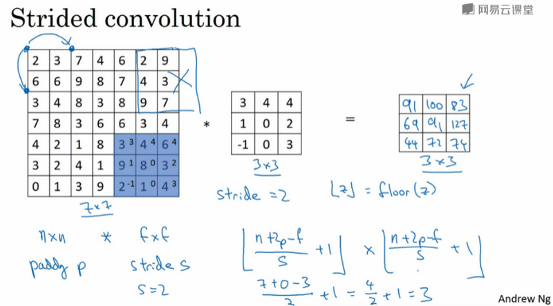
现在只剩下最后的一个细节了，如果商不是一个整数怎么办？在这种情况下，我们向下取整。这是向下取整的符号，这也叫做对进行地板除(floor)，这意味着向下取整到最近的整数。这个原则实现的方式是，你只在蓝框完全包括在图像或填充完的图像内部时，才对它进行运算。如果有任意一个蓝框移动到了外面，那你就不要进行相乘操作，这是一个惯例。你的3×3的过滤器必须完全处于图像中或者填充之后的图像区域内才输出相应结果，这就是惯例。因此正确计算输出维度的方法是向下取整，以免不是整数。
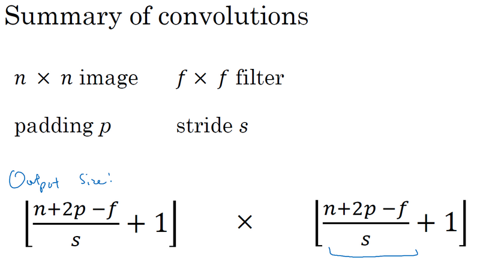
总结一下维度情况，如果你有一个的矩阵或者的图像，与一个的矩阵卷积，或者说的过滤器。Padding是，步幅为没输出尺寸就是这样：
可以选择所有的数使结果是整数是挺不错的，尽管一些时候，你不必这样做，只要向下取整也就可以了。你也可以自己选择一些，，和的值来验证这个输出尺寸的公式是对的。
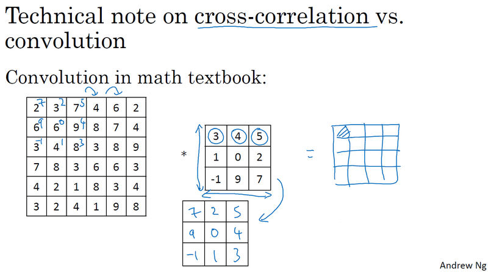
在讲下一部分之前，这里有一个关于互相关和卷积的技术性建议，这不会影响到你构建卷积神经网络的方式，但取决于你读的是数学教材还是信号处理教材，在不同的教材里符号可能不一致。如果你看的是一本典型的数学教科书，那么卷积的定义是做元素乘积求和，实际上还有一个步骤是你首先要做的，也就是在把这个6×6的矩阵和3×3的过滤器卷积之前，首先你将3×3的过滤器沿水平和垂直轴翻转，所以变为，这相当于将3×3的过滤器做了个镜像，在水平和垂直轴上（整理者注：此处应该是先顺时针旋转90得到，再水平翻转得到）。然后你再把这个翻转后的矩阵复制到这里（左边的图像矩阵），你要把这个翻转矩阵的元素相乘来计算输出的4×4矩阵左上角的元素，如图所示。然后取这9个数字，把它们平移一个位置，再平移一格，以此类推。
所以我们在这些视频中定义卷积运算时，我们跳过了这个镜像操作。从技术上讲，我们实际上做的，我们在前面视频中使用的操作，有时被称为互相关（cross-correlation）而不是卷积（convolution）。但在深度学习文献中，按照惯例，我们将这（不进行翻转操作）叫做卷积操作。
总结来说，按照机器学习的惯例，我们通常不进行翻转操作。从技术上说，这个操作可能叫做互相关更好。但在大部分的深度学习文献中都把它叫做卷积运算，因此我们将在这些视频中使用这个约定。如果你读了很多机器学习文献的话，你会发现许多人都把它叫做卷积运算，不需要用到这些翻转。
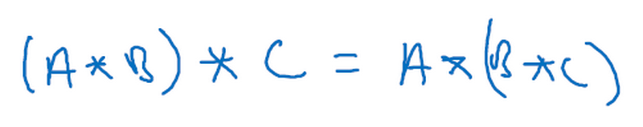
事实证明在信号处理中或某些数学分支中，在卷积的定义包含翻转，使得卷积运算符拥有这个性质，即，这在数学中被称为结合律。这对于一些信号处理应用来说很好，但对于深度神经网络来说它真的不重要，因此省略了这个双重镜像操作，就简化了代码，并使神经网络也能正常工作。
根据惯例，我们大多数人都叫它卷积，尽管数学家们更喜欢称之为互相关，但这不会影响到你在编程练习中要实现的任何东西，也不会影响你阅读和理解深度学习文献。
现在你已经看到了如何进行卷积，以及如何使用填充，如何在卷积中选择步幅。但到目前为止，我们所使用的是关于矩阵的卷积，例如6×6的矩阵。在下一集视频中，你将看到如何对立体进行卷积，这将会使你的卷积变得更加强大，让我们继续下一个视频。
1.6 三维卷积（Convolutions over volumes）
你已经知道如何对二维图像做卷积了，现在看看如何执行卷积不仅仅在二维图像上，而是三维立体上。
我们从一个例子开始，假如说你不仅想检测灰度图像的特征，也想检测RGB彩色图像的特征。彩色图像如果是6×6×3，这里的3指的是三个颜色通道，你可以把它想象成三个6×6图像的堆叠。为了检测图像的边缘或者其他的特征，不是把它跟原来的3×3的过滤器做卷积，而是跟一个三维的过滤器，它的维度是3×3×3，这样这个过滤器也有三层，对应红绿、蓝三个通道。
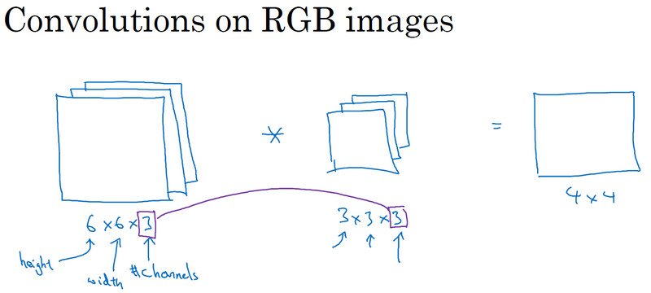
给这些起个名字（原图像），这里的第一个6代表图像高度，第二个6代表宽度，这个3代表通道的数目。同样你的过滤器也有一个高，宽和通道数，并且图像的通道数必须和过滤器的通道数匹配，所以这两个数（紫色方框标记的两个数）必须相等。下个幻灯片里，我们就会知道这个卷积操作是如何进行的了，这个的输出会是一个4×4的图像，注意是4×4×1，最后一个数不是3了。
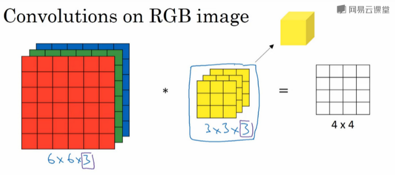
我们研究下这背后的细节，首先先换一张好看的图片。这个是6×6×3的图像，这个是3×3×3的过滤器，最后一个数字通道数必须和过滤器中的通道数相匹配。为了简化这个3×3×3过滤器的图像，我们不把它画成3个矩阵的堆叠，而画成这样，一个三维的立方体。
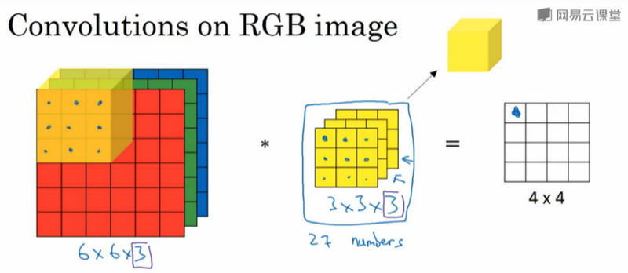
为了计算这个卷积操作的输出，你要做的就是把这个3×3×3的过滤器先放到最左上角的位置，这个3×3×3的过滤器有27个数，27个参数就是3的立方。依次取这27个数，然后乘以相应的红绿蓝通道中的数字。先取红色通道的前9个数字，然后是绿色通道，然后再是蓝色通道，乘以左边黄色立方体覆盖的对应的27个数，然后把这些数都加起来，就得到了输出的第一个数字。
如果要计算下一个输出，你把这个立方体滑动一个单位，再与这27个数相乘，把它们都加起来，就得到了下一个输出，以此类推。
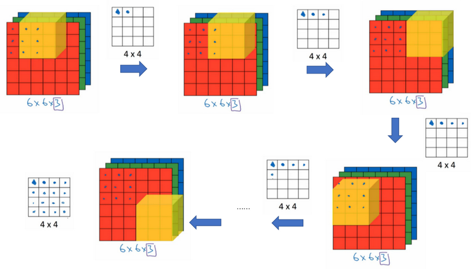
那么，这个能干什么呢？举个例子，这个过滤器是3×3×3的，如果你想检测图像红色通道的边缘，那么你可以将第一个过滤器设为，和之前一样，而绿色通道全为0，，蓝色也全为0。如果你把这三个堆叠在一起形成一个3×3×3的过滤器，那么这就是一个检测垂直边界的过滤器，但只对红色通道有用。
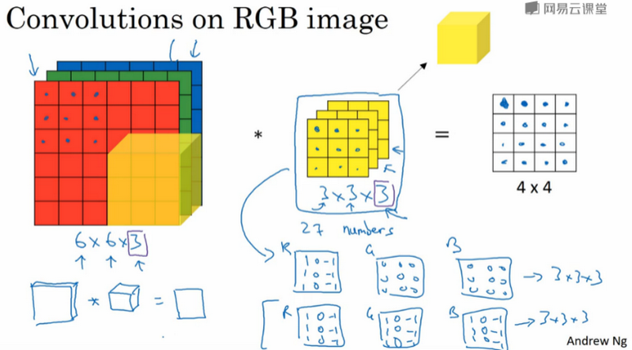
或者如果你不关心垂直边界在哪个颜色通道里，那么你可以用一个这样的过滤器，，，，所有三个通道都是这样。所以通过设置第二个过滤器参数，你就有了一个边界检测器，3×3×3的边界检测器，用来检测任意颜色通道里的边界。参数的选择不同，你就可以得到不同的特征检测器，所有的都是3×3×3的过滤器。
按照计算机视觉的惯例，当你的输入有特定的高宽和通道数时，你的过滤器可以有不同的高，不同的宽，但是必须一样的通道数。理论上，我们的过滤器只关注红色通道，或者只关注绿色或者蓝色通道也是可行的。
再注意一下这个卷积立方体，一个6×6×6的输入图像卷积上一个3×3×3的过滤器，得到一个4×4的二维输出。
现在你已经了解了如何对立方体卷积，还有最后一个概念，对建立卷积神经网络至关重要。就是，如果我们不仅仅想要检测垂直边缘怎么办？如果我们同时检测垂直边缘和水平边缘，还有45°倾斜的边缘，还有70°倾斜的边缘怎么做？换句话说，如果你想同时用多个过滤器怎么办？
这是我们上一张幻灯片的图片，我们让这个6×6×3的图像和这个3×3×3的过滤器卷积，得到4×4的输出。（第一个）这可能是一个垂直边界检测器或者是学习检测其他的特征。第二个过滤器可以用橘色来表示，它可以是一个水平边缘检测器。
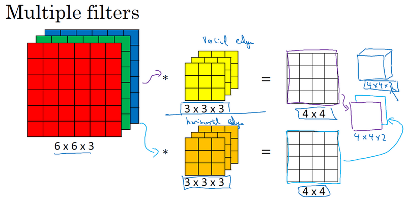
所以和第一个过滤器卷积，可以得到第一个4×4的输出，然后卷积第二个过滤器，得到一个不同的4×4的输出。我们做完卷积，然后把这两个4×4的输出，取第一个把它放到前面，然后取第二个过滤器输出，我把它画在这，放到后面。所以把这两个输出堆叠在一起，这样你就都得到了一个4×4×2的输出立方体，你可以把这个立方体当成，重新画在这，就是一个这样的盒子，所以这就是一个4×4×2的输出立方体。它用6×6×3的图像，然后卷积上这两个不同的3×3的过滤器，得到两个4×4的输出，它们堆叠在一起，形成一个4×4×2的立方体，这里的2的来源于我们用了两个不同的过滤器。
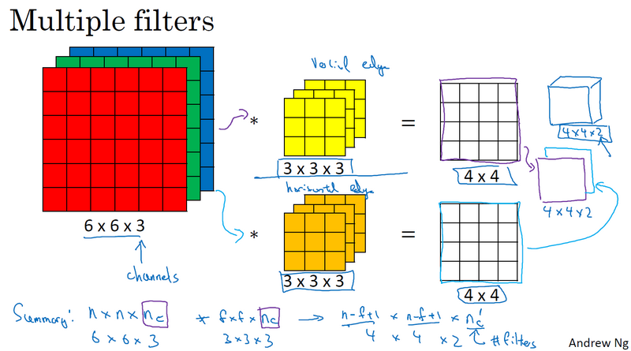
我们总结一下维度，如果你有一个（通道数）的输入图像，在这个例子中就是6×6×3，这里的就是通道数目，然后卷积上一个，这个例子中是3×3×3，按照惯例，这个（前一个）和这个（后一个）必须数值相同。然后你就得到了，这里其实就是下一层的通道数，它就是你用的过滤器的个数，在我们的例子中，那就是4×4×2。我写下这个假设时，用的步幅为1，并且没有padding。如果你用了不同的步幅或者padding，那么这个数值会变化，正如前面的视频演示的那样。
这个对立方体卷积的概念真的很有用，你现在可以用它的一小部分直接在三个通道的RGB图像上进行操作。更重要的是，你可以检测两个特征，比如垂直和水平边缘或者10个或者128个或者几百个不同的特征，并且输出的通道数会等于你要检测的特征数。
对于这里的符号，我一直用通道数（）来表示最后一个维度，在文献里大家也把它叫做3维立方体的深度。这两个术语，即通道或者深度，经常被用在文献中。但我觉得深度容易让人混淆，因为你通常也会说神经网络的深度。所以，在这些视频里我会用通道这个术语来表示过滤器的第三个维度的大小。
所以你已经知道怎么对立方体做卷积了，你已经准备好了实现卷积神经其中一层了，在下个视频里让我们看看是怎么做的。
1.7 单层卷积网络（One layer of a convolutional network）
今天我们要讲的是如何构建卷积神经网络的卷积层，下面来看个例子。
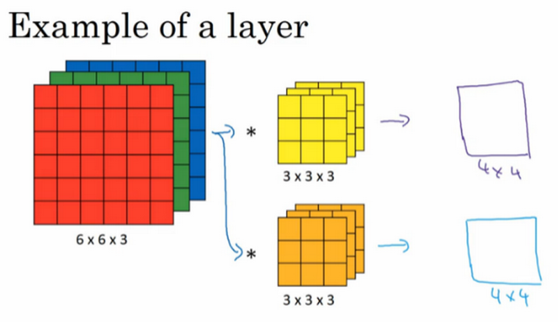
上节课，我们已经讲了如何通过两个过滤器卷积处理一个三维图像，并输出两个不同的4×4矩阵。假设使用第一个过滤器进行卷积，得到第一个4×4矩阵。使用第二个过滤器进行卷积得到另外一个4×4矩阵。
最终各自形成一个卷积神经网络层，然后增加偏差，它是一个实数，通过Python的广播机制给这16个元素都加上同一偏差。然后应用非线性函数，为了说明，它是一个非线性激活函数ReLU，输出结果是一个4×4矩阵。
对于第二个4×4矩阵，我们加上不同的偏差，它也是一个实数，16个数字都加上同一个实数，然后应用非线性函数，也就是一个非线性激活函数ReLU，最终得到另一个4×4矩阵。然后重复我们之前的步骤，把这两个矩阵堆叠起来，最终得到一个4×4×2的矩阵。我们通过计算，从6×6×3的输入推导出一个4×4×2矩阵，它是卷积神经网络的一层，把它映射到标准神经网络中四个卷积层中的某一层或者一个非卷积神经网络中。
注意前向传播中一个操作就是，其中，执行非线性函数得到，即。这里的输入是，也就是，这些过滤器用变量表示。在卷积过程中，我们对这27个数进行操作，其实是27×2，因为我们用了两个过滤器，我们取这些数做乘法。实际执行了一个线性函数，得到一个4×4的矩阵。卷积操作的输出结果是一个4×4的矩阵，它的作用类似于，也就是这两个4×4矩阵的输出结果，然后加上偏差。
这一部分（图中蓝色边框标记的部分）就是应用激活函数ReLU之前的值，它的作用类似于，最后应用非线性函数，得到的这个4×4×2矩阵，成为神经网络的下一层，也就是激活层。
这就是到的演变过程，首先执行线性函数，然后所有元素相乘做卷积，具体做法是运用线性函数再加上偏差，然后应用激活函数ReLU。这样就通过神经网络的一层把一个6×6×3的维度演化为一个4×4×2维度的，这就是卷积神经网络的一层。
示例中我们有两个过滤器，也就是有两个特征，因此我们才最终得到一个4×4×2的输出。但如果我们用了10个过滤器，而不是2个，我们最后会得到一个4×4×10维度的输出图像，因为我们选取了其中10个特征映射，而不仅仅是2个，将它们堆叠在一起，形成一个4×4×10的输出图像，也就是。
为了加深理解，我们来做一个练习。假设你有10个过滤器，而不是2个，神经网络的一层是3×3×3，那么，这一层有多少个参数呢？我们来计算一下，每一层都是一个3×3×3的矩阵，因此每个过滤器有27个参数，也就是27个数。然后加上一个偏差，用参数表示，现在参数增加到28个。上一页幻灯片里我画了2个过滤器，而现在我们有10个，加在一起是28×10，也就是280个参数。
请注意一点，不论输入图片有多大，1000×1000也好，5000×5000也好，参数始终都是280个。用这10个过滤器来提取特征，如垂直边缘，水平边缘和其它特征。即使这些图片很大，参数却很少，这就是卷积神经网络的一个特征，叫作“避免过拟合”。你已经知道到如何提取10个特征，可以应用到大图片中，而参数数量固定不变，此例中只有28个，相对较少。
最后我们总结一下用于描述卷积神经网络中的一层（以层为例），也就是卷积层的各种标记。

这一层是卷积层，用表示过滤器大小，我们说过过滤器大小为，上标表示层中过滤器大小为。通常情况下，上标用来标记层。用来标记padding的数量，padding数量也可指定为一个valid卷积，即无padding。或是same卷积，即选定padding，如此一来，输出和输入图片的高度和宽度就相同了。用标记步幅。
这一层的输入会是某个维度的数据，表示为，某层上的颜色通道数。
我们要稍作修改，增加上标，即，因为它是上一层的激活值。
此例中，所用图片的高度和宽度都一样，但它们也有可能不同，所以分别用上下标和来标记，即。那么在第层，图片大小为，层的输入就是上一层的输出，因此上标要用。神经网络这一层中会有输出，它本身会输出图像。其大小为，这就是输出图像的大小。
前面我们提到过，这个公式给出了输出图片的大小，至少给出了高度和宽度，（注意：（直接用这个运算结果，也可以向下取整）。在这个新表达式中，层输出图像的高度，即，同样我们可以计算出图像的宽度，用替换参数，即，公式一样，只要变化高度和宽度的参数我们便能计算输出图像的高度或宽度。这就是由推导以及推导的过程。
那么通道数量又是什么？这些数字从哪儿来的？我们来看一下。输出图像也具有深度，通过上一个示例，我们知道它等于该层中过滤器的数量，如果有2个过滤器，输出图像就是4×4×2，它是二维的，如果有10个过滤器，输出图像就是4×4×10。输出图像中的通道数量就是神经网络中这一层所使用的过滤器的数量。如何确定过滤器的大小呢？我们知道卷积一个6×6×3的图片需要一个3×3×3的过滤器，因此过滤器中通道的数量必须与输入中通道的数量一致。因此，输出通道数量就是输入通道数量，所以过滤器维度等于。
应用偏差和非线性函数之后，这一层的输出等于它的激活值，也就是这个维度（输出维度）。是一个三维体，即。当你执行批量梯度下降或小批量梯度下降时，如果有个例子，就是有个激活值的集合，那么输出。如果采用批量梯度下降，变量的排列顺序如下，首先是索引和训练示例，然后是其它三个变量。
该如何确定权重参数，即参数W呢？过滤器的维度已知，为，这只是一个过滤器的维度，有多少个过滤器，这（）是过滤器的数量，权重也就是所有过滤器的集合再乘以过滤器的总数量，即，损失数量L就是层中过滤器的个数。
最后我们看看偏差参数，每个过滤器都有一个偏差参数，它是一个实数。偏差包含了这些变量，它是该维度上的一个向量。后续课程中我们会看到，为了方便，偏差在代码中表示为一个1×1×1×的四维向量或四维张量。
卷积有很多种标记方法，这是我们最常用的卷积符号。大家在线搜索或查看开源代码时，关于高度，宽度和通道的顺序并没有完全统一的标准卷积，所以在查看GitHub上的源代码或阅读一些开源实现的时候，你会发现有些作者会采用把通道放在首位的编码标准，有时所有变量都采用这种标准。实际上在某些架构中，当检索这些图片时，会有一个变量或参数来标识计算通道数量和通道损失数量的先后顺序。只要保持一致，这两种卷积标准都可用。很遗憾，这只是一部分标记法，因为深度学习文献并未对标记达成一致，但课上我会采用这种卷积标识法，按高度，宽度和通道损失数量的顺序依次计算。
我知道，忽然间接触到这么多新的标记方法，你可能会说，这么多怎么记呢？别担心，不用全都记住，你可以通过本周的练习来熟悉它们。而这节课我想讲的重点是，卷积神经网络的某一卷积层的工作原理，以及如何计算某一卷积层的激活函数，并映射到下一层的激活值。了解了卷积神经网络中某一卷积层的工作原理，我们就可以把它们堆叠起来形成一个深度卷积神经网络，我们下节课再讲。
1.8 简单卷积网络示例（A simple convolution network example）
上节课，我们讲了如何为卷积网络构建一个卷积层。今天我们看一个深度卷积神经网络的具体示例，顺便练习一下我们上节课所学的标记法。
假设你有一张图片，你想做图片分类或图片识别，把这张图片输入定义为，然后辨别图片中有没有猫，用0或1表示，这是一个分类问题，我们来构建适用于这项任务的卷积神经网络。针对这个示例，我用了一张比较小的图片，大小是39×39×3，这样设定可以使其中一些数字效果更好。所以，即高度和宽度都等于39，，即0层的通道数为3。
假设第一层我们用一个3×3的过滤器来提取特征，那么，因为过滤器时3×3的矩阵。，，所以高度和宽度使用valid卷积。如果有10个过滤器，神经网络下一层的激活值为37×37×10，写10是因为我们用了10个过滤器，37是公式的计算结果，也就是，所以输出是37×37，它是一个vaild卷积，这是输出结果的大小。第一层标记为，，等于第一层中过滤器的个数，这（37×37×10）是第一层激活值的维度。
假设还有另外一个卷积层，这次我们采用的过滤器是5×5的矩阵。在标记法中，神经网络下一层的，即步幅为2，即。padding为0，即，且有20个过滤器。所以其输出结果会是一张新图像，这次的输出结果为17×17×20，因为步幅是2，维度缩小得很快，大小从37×37减小到17×17，减小了一半还多，过滤器是20个，所以通道数也是20，17×17×20即激活值的维度。因此，。
我们来构建最后一个卷积层，假设过滤器还是5×5，步幅为2，即，，计算过程我跳过了，最后输出为7×7×40，假设使用了40个过滤器。padding为0，40个过滤器，最后结果为7×7×40。
到此，这张39×39×3的输入图像就处理完毕了，为图片提取了7×7×40个特征，计算出来就是1960个特征。然后对该卷积进行处理，可以将其平滑或展开成1960个单元。平滑处理后可以输出一个向量，其填充内容是logistic回归单元还是softmax回归单元，完全取决于我们是想识图片上有没有猫，还是想识别种不同对象中的一种，用表示最终神经网络的预测输出。明确一点，最后这一步是处理所有数字，即全部的1960个数字，把它们展开成一个很长的向量。为了预测最终的输出结果，我们把这个长向量填充到softmax回归函数中。
这是卷积神经网络的一个典型范例，设计卷积神经网络时，确定这些超参数比较费工夫。要决定过滤器的大小、步幅、padding以及使用多少个过滤器。这周和下周，我会针对选择参数的问题提供一些建议和指导。
而这节课你要掌握的一点是，随着神经网络计算深度不断加深，通常开始时的图像也要更大一些，初始值为39×39，高度和宽度会在一段时间内保持一致，然后随着网络深度的加深而逐渐减小，从39到37，再到17，最后到7。而通道数量在增加，从3到10，再到20，最后到40。在许多其它卷积神经网络中，你也可以看到这种趋势。关于如何确定这些参数，后面课上我会更详细讲解，这是我们讲的第一个卷积神经网络示例。
一个典型的卷积神经网络通常有三层，一个是卷积层，我们常常用Conv来标注。上一个例子，我用的就是CONV。还有两种常见类型的层，我们留在后两节课讲。一个是池化层，我们称之为POOL。最后一个是全连接层，用FC表示。虽然仅用卷积层也有可能构建出很好的神经网络，但大部分神经望楼架构师依然会添加池化层和全连接层。幸运的是，池化层和全连接层比卷积层更容易设计。后两节课我们会快速讲解这两个概念以便你更好的了解神经网络中最常用的这几种层，你就可以利用它们构建更强大的网络了。
再次恭喜你已经掌握了第一个卷积神经网络，本周后几节课，我们会学习如何训练这些卷积神经网络。不过在这之前，我还要简单介绍一下池化层和全连接层。然后再训练这些网络，到时我会用到大家熟悉的反向传播训练方法。那么下节课，我们就先来了解如何构建神经网络的池化层。
1.9 池化层（Pooling layers）
除了卷积层，卷积网络也经常使用池化层来缩减模型的大小，提高计算速度，同时提高所提取特征的鲁棒性，我们来看一下。
先举一个池化层的例子，然后我们再讨论池化层的必要性。假如输入是一个4×4矩阵，用到的池化类型是最大池化（max pooling）。执行最大池化的树池是一个2×2矩阵。执行过程非常简单，把4×4的输入拆分成不同的区域，我把这个区域用不同颜色来标记。对于2×2的输出，输出的每个元素都是其对应颜色区域中的最大元素值。
左上区域的最大值是9，右上区域的最大元素值是2，左下区域的最大值是6，右下区域的最大值是3。为了计算出右侧这4个元素值，我们需要对输入矩阵的2×2区域做最大值运算。这就像是应用了一个规模为2的过滤器，因为我们选用的是2×2区域，步幅是2，这些就是最大池化的超参数。
因为我们使用的过滤器为2×2，最后输出是9。然后向右移动2个步幅，计算出最大值2。然后是第二行，向下移动2步得到最大值6。最后向右移动3步，得到最大值3。这是一个2×2矩阵，即，步幅是2，即。
这是对最大池化功能的直观理解，你可以把这个4×4输入看作是某些特征的集合，也许不是。你可以把这个4×4区域看作是某些特征的集合，也就是神经网络中某一层的非激活值集合。数字大意味着可能探测到了某些特定的特征，左上象限具有的特征可能是一个垂直边缘，一只眼睛，或是大家害怕遇到的CAP特征。显然左上象限中存在这个特征，这个特征可能是一只猫眼探测器。然而，右上象限并不存在这个特征。最大化操作的功能就是只要在任何一个象限内提取到某个特征，它都会保留在最大化的池化输出里。所以最大化运算的实际作用就是，如果在过滤器中提取到某个特征，那么保留其最大值。如果没有提取到这个特征，可能在右上象限中不存在这个特征，那么其中的最大值也还是很小，这就是最大池化的直观理解。
必须承认，人们使用最大池化的主要原因是此方法在很多实验中效果都很好。尽管刚刚描述的直观理解经常被引用，不知大家是否完全理解它的真正原因，不知大家是否理解最大池化效率很高的真正原因。
其中一个有意思的特点就是，它有一组超参数，但并没有参数需要学习。实际上，梯度下降没有什么可学的，一旦确定了和，它就是一个固定运算，梯度下降无需改变任何值。
我们来看一个有若干个超级参数的示例，输入是一个5×5的矩阵。我们采用最大池化法，它的过滤器参数为3×3，即，步幅为1，，输出矩阵是3×3.之前讲的计算卷积层输出大小的公式同样适用于最大池化，即，这个公式也可以计算最大池化的输出大小。
此例是计算3×3输出的每个元素，我们看左上角这些元素，注意这是一个3×3区域，因为有3个过滤器，取最大值9。然后移动一个元素，因为步幅是1，蓝色区域的最大值是9.继续向右移动，蓝色区域的最大值是5。然后移到下一行，因为步幅是1，我们只向下移动一个格，所以该区域的最大值是9。这个区域也是9。这两个区域的最大值都是5。最后这三个区域的最大值分别为8，6和9。超参数，，最终输出如图所示。
以上就是一个二维输入的最大池化的演示，如果输入是三维的，那么输出也是三维的。例如，输入是5×5×2，那么输出是3×3×2。计算最大池化的方法就是分别对每个通道执行刚刚的计算过程。如上图所示，第一个通道依然保持不变。对于第二个通道，我刚才画在下面的，在这个层做同样的计算，得到第二个通道的输出。一般来说，如果输入是5×5×，输出就是3×3×，个通道中每个通道都单独执行最大池化计算，以上就是最大池化算法。
另外还有一种类型的池化，平均池化，它不太常用。我简单介绍一下，这种运算顾名思义，选取的不是每个过滤器的最大值，而是平均值。示例中，紫色区域的平均值是3.75，后面依次是1.25、4和2。这个平均池化的超级参数，，我们也可以选择其它超级参数。
目前来说，最大池化比平均池化更常用。但也有例外，就是深度很深的神经网络，你可以用平均池化来分解规模为7×7×1000的网络的表示层，在整个空间内求平均值，得到1×1×1000，一会我们看个例子。但在神经网络中，最大池化要比平均池化用得更多。
总结一下，池化的超级参数包括过滤器大小和步幅，常用的参数值为，，应用频率非常高，其效果相当于高度和宽度缩减一半。也有使用，的情况。至于其它超级参数就要看你用的是最大池化还是平均池化了。你也可以根据自己意愿增加表示padding的其他超级参数，虽然很少这么用。最大池化时，往往很少用到超参数padding，当然也有例外的情况，我们下周会讲。大部分情况下，最大池化很少用padding。目前最常用的值是0，即。最大池化的输入就是，假设没有padding，则输出。输入通道与输出通道个数相同，因为我们对每个通道都做了池化。需要注意的一点是，池化过程中没有需要学习的参数。执行反向传播时，反向传播没有参数适用于最大池化。只有这些设置过的超参数，可能是手动设置的，也可能是通过交叉验证设置的。
除了这些，池化的内容就全部讲完了。最大池化只是计算神经网络某一层的静态属性，没有什么需要学习的，它只是一个静态属性。
关于池化我们就讲到这儿，现在我们已经知道如何构建卷积层和池化层了。下节课，我们会分析一个更复杂的可以引进全连接层的卷积网络示例。
1.10 卷积神经网络示例（Convolutional neural network example）
构建全卷积神经网络的构造模块我们已经掌握得差不多了，下面来看个例子。
假设，有一张大小为32×32×3的输入图片，这是一张RGB模式的图片，你想做手写体数字识别。32×32×3的RGB图片中含有某个数字，比如7，你想识别它是从0-9这10个数字中的哪一个，我们构建一个神经网络来实现这个功能。
我用的这个网络模型和经典网络LeNet-5非常相似，灵感也来源于此。LeNet-5是多年前Yann LeCun创建的，我所采用的模型并不是LeNet-5，但是受它启发，许多参数选择都与LeNet-5相似。输入是32×32×3的矩阵，假设第一层使用过滤器大小为5×5，步幅是1，padding是0，过滤器个数为6，那么输出为28×28×6。将这层标记为CONV1，它用了6个过滤器，增加了偏差，应用了非线性函数，可能是ReLU非线性函数，最后输出CONV1的结果。
然后构建一个池化层，这里我选择用最大池化，参数，，因为padding为0，我就不写出来了。现在开始构建池化层，最大池化使用的过滤器为2×2，步幅为2，表示层的高度和宽度会减少一半。因此，28×28变成了14×14，通道数量保持不变，所以最终输出为14×14×6，将该输出标记为POOL1。
人们发现在卷积神经网络文献中，卷积有两种分类，这与所谓层的划分存在一致性。一类卷积是一个卷积层和一个池化层一起作为一层，这就是神经网络的Layer1。另一类卷积是把卷积层作为一层，而池化层单独作为一层。人们在计算神经网络有多少层时，通常只统计具有权重和参数的层。因为池化层没有权重和参数，只有一些超参数。这里，我们把CONV1和POOL1共同作为一个卷积，并标记为Layer1。虽然你在阅读网络文章或研究报告时，你可能会看到卷积层和池化层各为一层的情况，这只是两种不同的标记术语。一般我在统计网络层数时，只计算具有权重的层，也就是把CONV1和POOL1作为Layer1。这里我们用CONV1和POOL1来标记，两者都是神经网络Layer1的一部分，POOL1也被划分在Layer1中，因为它没有权重，得到的输出是14×14×6。
我们再为它构建一个卷积层，过滤器大小为5×5，步幅为1，这次我们用10个过滤器，最后输出一个10×10×10的矩阵，标记为CONV2。
然后做最大池化，超参数，。你大概可以猜出结果，，，高度和宽度会减半，最后输出为5×5×10，标记为POOL2，这就是神经网络的第二个卷积层，即Layer2。
如果对Layer1应用另一个卷积层，过滤器为5×5，即，步幅是1，padding为0，所以这里省略了，过滤器16个，所以CONV2输出为10×10×16。我们看看CONV2，这是CONV2层。
继续执行做大池化计算，参数，，你能猜到结果么？对10×10×16输入执行最大池化计算，参数，，高度和宽度减半，计算结果猜到了吧。最大池化的参数，，输入的高度和宽度会减半，结果为5×5×16，通道数和之前一样，标记为POOL2。这是一个卷积，即Layer2，因为它只有一个权重集和一个卷积层CONV2。
5×5×16矩阵包含400个元素，现在将POOL2平整化为一个大小为400的一维向量。我们可以把平整化结果想象成这样的一个神经元集合，然后利用这400个单元构建下一层。下一层含有120个单元，这就是我们第一个全连接层，标记为FC3。这400个单元与120个单元紧密相连，这就是全连接层。它很像我们在第一和第二门课中讲过的单神经网络层，这是一个标准的神经网络。它的权重矩阵为，维度为120×400。这就是所谓的“全连接”，因为这400个单元与这120个单元的每一项连接，还有一个偏差参数。最后输出120个维度，因为有120个输出。
然后我们对这个120个单元再添加一个全连接层，这层更小，假设它含有84个单元，标记为FC4。
最后，用这84个单元填充一个softmax单元。如果我们想通过手写数字识别来识别手写0-9这10个数字，这个softmax就会有10个输出。
此例中的卷积神经网络很典型，看上去它有很多超参数，关于如何选定这些参数，后面我提供更多建议。常规做法是，尽量不要自己设置超参数，而是查看文献中别人采用了哪些超参数，选一个在别人任务中效果很好的架构，那么它也有可能适用于你自己的应用程序，这块下周我会细讲。
现在，我想指出的是，随着神经网络深度的加深，高度和宽度通常都会减少，前面我就提到过，从32×32到28×28，到14×14，到10×10，再到5×5。所以随着层数增加，高度和宽度都会减小，而通道数量会增加，从3到6到16不断增加，然后得到一个全连接层。
在神经网络中，另一种常见模式就是一个或多个卷积后面跟随一个池化层，然后一个或多个卷积层后面再跟一个池化层，然后是几个全连接层，最后是一个softmax。这是神经网络的另一种常见模式。
接下来我们讲讲神经网络的激活值形状，激活值大小和参数数量。输入为32×32×3，这些数做乘法，结果为3072，所以激活值有3072维，激活值矩阵为32×32×3，输入层没有参数。计算其他层的时候，试着自己计算出激活值，这些都是网络中不同层的激活值形状和激活值大小。
有几点要注意，第一，池化层和最大池化层没有参数；第二卷积层的参数相对较少，前面课上我们提到过，其实许多参数都存在于神经网络的全连接层。观察可发现，随着神经网络的加深，激活值尺寸会逐渐变小，如果激活值尺寸下降太快，也会影响神经网络性能。示例中，激活值尺寸在第一层为6000，然后减少到1600，慢慢减少到84，最后输出softmax结果。我们发现，许多卷积网络都具有这些属性，模式上也相似。
神经网络的基本构造模块我们已经讲完了，一个卷积神经网络包括卷积层、池化层和全连接层。许多计算机视觉研究正在探索如何把这些基本模块整合起来，构建高效的神经网络，整合这些基本模块确实需要深入的理解。根据我的经验，找到整合基本构造模块最好方法就是大量阅读别人的案例。下周我会演示一些整合基本模块，成功构建高效神经网络的具体案例。我希望下周的课程可以帮助你找到构建有效神经网络的感觉，或许你也可以将别人开发的框架应用于自己的应用程序，这是下周的内容。下节课，也是本周最后一节课，我想花点时间讨论下，为什么大家愿意使用卷积，使用卷积的好处和优势是什么，以及如何整合多个卷积，如何检验神经网络，如何在训练集上训练神经网络来识别图片或执行其他任务，我们下节课继续讲。
1.11 为什么使用卷积？（Why convolutions?）
这是本周最后一节课，我们来分析一下卷积在神经网络中如此受用的原因，然后对如何整合这些卷积，如何通过一个标注过的训练集训练卷积神经网络做个简单概括。和只用全连接层相比，卷积层的两个主要优势在于参数共享和稀疏连接，举例说明一下。
假设有一张32×32×3维度的图片，这是上节课的示例，假设用了6个大小为5×5的过滤器，输出维度为28×28×6。32×32×3=3072，28×28×6=4704。我们构建一个神经网络，其中一层含有3072个单元，下一层含有4074个单元，两层中的每个神经元彼此相连，然后计算权重矩阵，它等于4074×3072≈1400万，所以要训练的参数很多。虽然以现在的技术，我们可以用1400多万个参数来训练网络，因为这张32×32×3的图片非常小，训练这么多参数没有问题。如果这是一张1000×1000的图片，权重矩阵会变得非常大。我们看看这个卷积层的参数数量，每个过滤器都是5×5，一个过滤器有25个参数，再加上偏差参数，那么每个过滤器就有26个参数，一共有6个过滤器，所以参数共计156个，参数数量还是很少。
卷积网络映射这么少参数有两个原因：
一是参数共享。观察发现，特征检测如垂直边缘检测如果适用于图片的某个区域，那么它也可能适用于图片的其他区域。也就是说，如果你用一个3×3的过滤器检测垂直边缘，那么图片的左上角区域，以及旁边的各个区域（左边矩阵中蓝色方框标记的部分）都可以使用这个3×3的过滤器。每个特征检测器以及输出都可以在输入图片的不同区域中使用同样的参数，以便提取垂直边缘或其它特征。它不仅适用于边缘特征这样的低阶特征，同样适用于高阶特征，例如提取脸上的眼睛，猫或者其他特征对象。即使减少参数个数，这9个参数同样能计算出16个输出。直观感觉是，一个特征检测器，如垂直边缘检测器用于检测图片左上角区域的特征，这个特征很可能也适用于图片的右下角区域。因此在计算图片左上角和右下角区域时，你不需要添加其它特征检测器。假如有一个这样的数据集，其左上角和右下角可能有不同分布，也有可能稍有不同，但很相似，整张图片共享特征检测器，提取效果也很好。
第二个方法是使用稀疏连接，我来解释下。这个0是通过3×3的卷积计算得到的，它只依赖于这个3×3的输入的单元格，右边这个输出单元（元素0）仅与36个输入特征中9个相连接。而且其它像素值都不会对输出产生任影响，这就是稀疏连接的概念。
再举一个例子，这个输出（右边矩阵中红色标记的元素 30）仅仅依赖于这9个特征（左边矩阵红色方框标记的区域），看上去只有这9个输入特征与输出相连接，其它像素对输出没有任何影响。
神经网络可以通过这两种机制减少参数，以便我们用更小的训练集来训练它，从而预防过度拟合。你们也可能听过，卷积神经网络善于捕捉平移不变。通过观察可以发现，向右移动两个像素，图片中的猫依然清晰可见，因为神经网络的卷积结构使得即使移动几个像素，这张图片依然具有非常相似的特征，应该属于同样的输出标记。实际上，我们用同一个过滤器生成各层中，图片的所有像素值，希望网络通过自动学习变得更加健壮，以便更好地取得所期望的平移不变属性。
这就是卷积或卷积网络在计算机视觉任务中表现良好的原因。
最后，我们把这些层整合起来，看看如何训练这些网络。比如我们要构建一个猫咪检测器，我们有下面这个标记训练集，表示一张图片，是二进制标记或某个重要标记。我们选定了一个卷积神经网络，输入图片，增加卷积层和池化层，然后添加全连接层，最后输出一个softmax，即。卷积层和全连接层有不同的参数和偏差，我们可以用任何参数集合来定义代价函数。一个类似于我们之前讲过的那种代价函数，并随机初始化其参数和，代价函数等于神经网络对整个训练集的预测的损失总和再除以（即）。所以训练神经网络，你要做的就是使用梯度下降法，或其它算法，例如Momentum梯度下降法，含RMSProp或其它因子的梯度下降来优化神经网络中所有参数，以减少代价函数的值。通过上述操作你可以构建一个高效的猫咪检测器或其它检测器。
恭喜你完成了这一周的课程，你已经学习了卷积神经网络的所有基本构造模块，以及如何在高效图片识别系统中整合这些模块。透过本周编程练习，你可以更加具体了解这些概念，试着整合这些构造模块，并用它们解决自己的问题。
下周，我们将继续深入学习卷积神经网络。我曾提到卷积神经网络中有很多超参数，下周，我打算具体展示一些最有效的卷积神经网络示例，你也可以尝试去判断哪些网络架构类型效率更高。人们通常的做法是将别人发现和发表在研究报告上的架构应用于自己的应用程序。下周看过更多具体的示例后，相信你会做的更好。此外，下星期我们也会深入分析卷积神经网络如此高效的原因，同时讲解一些新的计算机视觉应用程序，例如，对象检测和神经风格迁移以及如何利用这些算法创造新的艺术品形式。